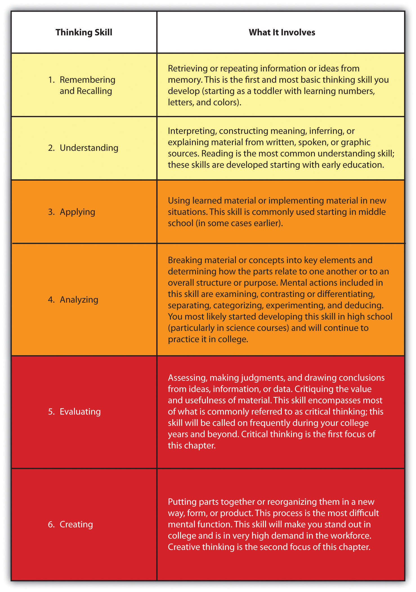

So what are the various types of thinking skills, and what kind things are we doing when we apply them? In the 1950s, Benjamin Bloom developed a classification of thinking skills that is still helpful today; it is known as Bloom’s taxonomyA classification of thinking skills developed by Benjamin Bloom. In order of increasing complexity, they are knowledge, comprehension, application, analysis, synthesis, and evaluation.. He lists six types of thinking skills, ranked in order of complexity: knowledge, comprehension, application, analysis, synthesis, and evaluation. Figure 3.2 "Types of Thinking Skills" outlines each skill and what is involved in that type of thinking, as updated by Lorin Anderson and David Krothwohl.L. W. Anderson and David R. Krathwohl, eds., A Taxonomy for Learning, Teaching, and Assessing: A Revision of Bloom’s Taxonomy of Educational Objectives (Boston, MA: Allyn & Bacon, 2001).
Figure 3.2 Types of Thinking Skills
All of these thinking skills are important for college work (and life in the “real world,” too). You’ve likely had a great deal of experience with the lower-level thinking skills (yellow section). The midlevel skills are skills you will get a lot of practice with in college, and you may be well on your way to mastering them already. The higher-level thinking skills (red section) are the most demanding, and you will need to invest focused effort to develop them.
Think about Figure 3.2 "Types of Thinking Skills". Are you using all six thinking skills? Reflect on your schoolwork in the past three weeks and identify specific examples where you used each of the thinking skills. Use the comment column to write notes about the skills that are second nature to you and those you would like to develop further.
| Skill Set | How You Used It in the Past Three Weeks | Comments |
|---|---|---|
| Remembering and Recalling |
|
|
| Understanding |
|
|
| Applying |
|
|
| Analyzing |
|
|
| Evaluating |
|
|
| Creating |
|
|
Look at the lists of things you actually did in each case. Notice that there are certain verbs that apply to each skill set. When you see those verbs as a prompt in an assignment or an exam, you will know what kind of thinking the instructor expects from you. Table 3.1 "Thinking Verbs" lists some of the most common verbs associated with each thinking skill.
Table 3.1 Thinking Verbs
| Skill Set | Verbs |
|---|---|
| 1. Remembering and Recalling | Bookmark, count, describe, draw, enumerate, find, google, identify, label, list, match, name, quote, recall, recite, search, select, sequence, tell, write |
| 2. Understanding | Blog, conclude, describe, discuss, explain, generalize, identify, illustrate, interpret, paraphrase, predict, report, restate, review, summarize, tell, tweet |
| 3. Applying | Apply, articulate, change, chart, choose, collect, compute, control, demonstrate, determine, do, download, dramatize, imitate, implement, interview, install (as in software), participate, prepare, produce, provide, report, role-play, run (software), select, share, show, solve, transfer, use |
| 4. Analyzing | Analyze, break down, characterize, classify, compare, contrast, debate, deduce, diagram, differentiate, discriminate, distinguish, examine, infer, link, outline, relate, research, reverse-engineer, separate, subdivide, tag |
| 5. Evaluating | Appraise, argue, assess, beta test, choose, collaborate, compare, contrast, conclude, critique, criticize, decide, defend, “friend/de-friend,” evaluate, judge, justify, network, post, predict, prioritize, prove, rank, rate, review, select, support |
| 6. Creating | Adapt, animate, blog, combine, compose, construct, create, design, develop, devise, film, formulate, integrate, invent, make, model, modify, organize, perform, plan, podcast, produce, program, propose, rearrange, remix, revise, rewrite, structure |
Throughout this book, we give tips that will help you develop your thinking skills. You have read about the learning cycle and the importance of applying your knowledge. You will learn tips for remembering information from your notes and classes. Preparing for class requires you to analyze what you know and what you need to learn. The sections on listening and reading will help you develop your understanding skills. Look for those tips and practice them.
In this chapter, we will focus on critical thinking (evaluating) and creative thinking. They deserve specific focus because they are likely to be the skills you have least practice with. These are the skills most helpful for success in college and in “real life.” Creative thinking will help you come up with possible solutions for problems and new ideas. Critical thinking will help you decide which of those ideas have most merit and deserve to be implemented.
List three verbs that are associated with application skills.
____________________
____________________
____________________
What is another name for “evaluation” thinking skills?
__________________________________________________________________
What thinking skills are associated with each of the following?